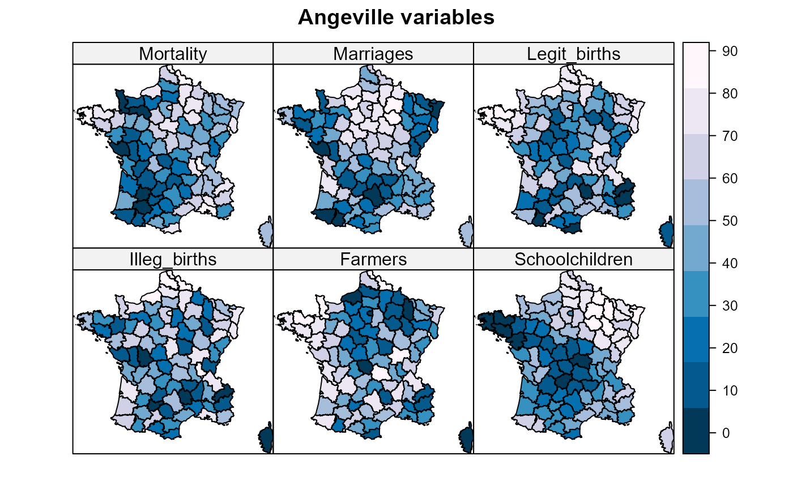

Data from d'Angeville (1836) on the population of France
Angeville.RdAdolph d'Angeville (1836) presented a comprehensive statistical summary of nearly every known measurable characteristic of the French population (by department) in his Essai sur la Statistique de la Population francaise. Using the graphic method of shaded (choropleth) maps invented by Baron Charles Dupin and applied to significant social questions by Guerry, Angeville's Essai became the first broad and general application of principles of graphic representation to national industrial and population data.
The collection of variables in the data frame Angeville
is a small subset of over 120 columns presented in 8 tables and many
graphic maps.
Usage
data(Angeville)Format
A data frame with 86 observations on the following 16 variables.
depta numeric vector
DepartmentDepartment name: a factor with levels
AinAisne...VosgesYonneMortalityMortality: Number of births to give 100 people at age 21 (T1:13)
MarriagesNumber of marriages per 1000 men aged 21 (T1:15)
Legit_birthsAnnual no. of legitimate births (T2:17)
Illeg_birthsAnnual no. of illegitimate births (T2:18)
RecruitsNumber of people registered for military recruitment from 1825-1833 (T3:32)
ConscriptsNumber of inhabitants per military conscript (T3:33)
ExemptionsNumber of military exemptions per 1000 all of physical causes (T3:47)
FarmersNumber of farmers during the census in 1831 (T4:65)
Recruits_ignorantAverage number of ignorant recruits per 1000 (T5:69)
SchoolchildrenNumber of schoolchildren per 1000 inhabitants (T5:71)
Windows_doorsNumber of windows & doors in houses per 100 inhabitants (T5:72). This is sometimes taken as an indicator of household wealth.
Primary_schools"Number of primary schools (T5:74)
Life_expLife expectancy in years (T1:9a,9b)
Pop1831Population in 1831
Details
ID codes for dept were modified from those in Angeville's tables
to match those used in Guerry.
Angeville's variables are recorded in a variety of different ways and some of these were calculated from other columns in his tables not included here. As well, the variable names and labels used here were often shortened from the more complete descriptions given by d'Angeville. The notation "(Tn:k)" indicates that the variable used here came from Table n, Column k.
Source
Angeville, A. d' (1836). Essai sur la Statistique de la Population francaise, Paris: F. Darfour.
The data was digitally scanned from Angeville's tables using OCR software, then extensively edited to correct obvious errors and finally subjected to some consistency checks using the column totals and ranked values he provided.
References
Whitt, H. P. (2007). Modernism, internal colonialism, and the direction of violence: suicide and crimes against persons in France, 1825-1830. Unpublished ms.
Examples
library(Guerry)
library(sp)
library(RColorBrewer)
data(Guerry)
data(gfrance)
data(Angeville)
gf <- gfrance # the SpatialPolygonsDataFrame
# Add some Angeville variables, transform them to ranks
gf$Mortality <- rank(Angeville$Mortality)
gf$Marriages <- rank(Angeville$Marriages)
gf$Legit_births <- rank(Angeville$Legit_births)
gf$Illeg_births <- rank(Angeville$Illeg_births)
gf$Farmers <- rank(Angeville$Farmers)
gf$Schoolchildren <- rank(Angeville$Schoolchildren)
# plot them on map of France
my.palette <- rev(brewer.pal(n = 9, name = "PuBu"))
spplot(gf,
c("Mortality", "Marriages", "Legit_births", "Illeg_births", "Farmers", "Schoolchildren"),
names.attr = c("Mortality", "Marriages", "Legit_births",
"Illeg_births", "Farmers", "Schoolchildren"),
layout=c(3,2),
as.table=TRUE,
col.regions = my.palette,
cuts = 8, # col = "transparent",
main="Angeville variables")
